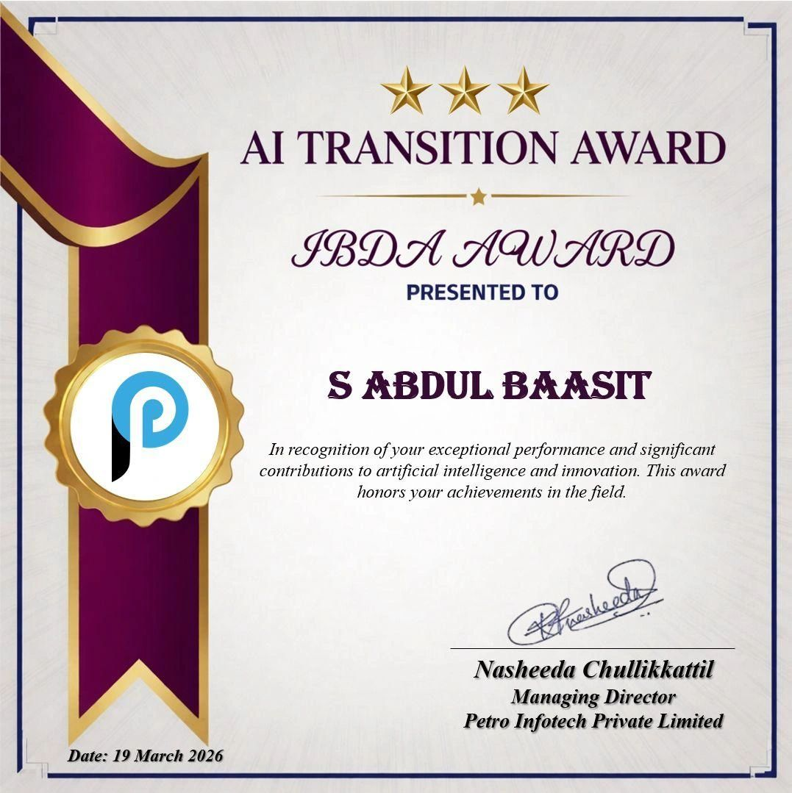

Skills
HTML5
CSS3
SCSS
JavaScript (ES6+)
TypeScript
Angular
Angular Reactive Forms
Angular Router
Angular Guards
RxJS (Basic)
Bootstrap
PrimeNG
REST API Integration
Angular HttpClient
JSON Server (Mock Backend)
ASP.NET Web API (Working Knowledge)
PL/SQL and Oracle Stored Procedures (Basic)
Python
Responsive Web Design
GitHub
VS Code
Node.js CLI
PyCharm
Jupyter Notebook
Manual QA and Functional Test Cases
AI-Assisted Development
Experience
Software Developer Trainee
- Developed and enhanced frontend features for DigiHR, an HR management platform, building Angular components, services, and routing for employee, payroll, and attendance workflows.
- Contributed to NBG DigiHR, a government-customized deployment for an entity in Oman, implementing Angular UI logic and integrating ASP.NET Web API endpoints for client-specific requirements.
- Worked on IGC-MIS for Integrated Gas Company (Oman), handling Angular frontend development and API integration, with AI-assisted support for PL/SQL stored procedure understanding.
- Applied AI-assisted development tools across SDLC tasks to accelerate implementation, assist debugging, and improve functional test case quality.
- Received the AI Transition Award for notable contributions to integrating AI tools into development and testing workflows.
- Wrote and reviewed functional test cases to improve module-level test coverage and release documentation quality.
Frontend Developer Intern
- Built a responsive e-commerce web application with dynamic product listings, category filters, product search, and checkout flow using HTML, CSS, and JavaScript.
- Improved UI consistency and accessibility across pages, gaining practical experience in responsive design and real-world frontend development.
Projects
CareerConnect - Role-Based Job Board Application
- Built a full job board application with separate Job Seeker and Employer experiences using component-driven Angular development.
- Set up route guards and role-based access control for secure navigation and personalized dashboards.
- Implemented employer-side CRUD for job listings and job seeker workflows for profile creation, browsing, and application tracking.
- Used PrimeNG for production-quality components and SweetAlert2 for user-friendly confirmations and notifications.
User Management System
- Developed a user management interface with full CRUD functionality using Angular Reactive Forms, services, routing, and REST API integration via JSON Server.
- Handled input validation, reusable component design, and smooth user workflows for creating, updating, and deleting records.
- Improved user experience with SweetAlert2 confirmations, Toastr notifications, and Font Awesome iconography.
Personal Portfolio Website
- Designed and deployed a responsive portfolio with dark/light theme switching, smooth navigation, and interactive UI sections.
- Hosted on GitHub Pages with an optimized layout and assets for consistent performance across devices.
Flipkart Clone
- Built a responsive e-commerce UI clone with product listing, category browsing, search, filtering, and shopping cart flow using modular JavaScript.
Education
Bachelor of Technology (B.Tech) - Computer Science Engineering
Senior Secondary (CBSE, Class XII)
Secondary (CBSE, Class X)
Certifications
Full Stack Developer Certification
Python Certification
Front-End Development
Awards & Recognition
AI Transition Award

Recognized for effectively integrating AI-assisted development tools into development and testing workflows, contributing to the organization's AI adoption roadmap across the SDLC.